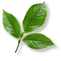
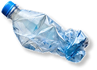
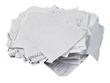
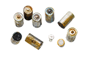
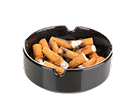

Cara Pemeliharaan Lingkungan
Kenali berbagai jenis sampah dan jangka waktu terurainya.

Organik
Sampah yang berasal dari makhluk hidup dan dapat terurai secara alami oleh mikroorganisme.
Sisa makanan, Kulit buah, Daun kering, Sayuran busuk, Ampas teh atau kopi dan Ranting pohon.
Terurai :
2 minggu - 6 bulan

Non Organik
Sampah yang berasal dari bahan buatan manusia dan sulit terurai secara alami.
Botol plastik, Kaleng, Kaca, Bungkus makanan dan Ban bekas.
Terurai :
100 - 500 tahun

Kertas
Sampah yang berasal dari bahan kertas dan umumnya masih dapat didaur ulang.
Koran bekas, Kardus, Buku rusak, Kertas tugas dan Majalah bekas.
Terurai :
2 - 5 bulan

Berbahaya
Sampah dari bahan berbahaya dan beracun yang dapat membahayakan kesehatan manusia.
Baterai bekas, Lampu neon, Obat kadaluarsa, Botol pestisida dan Tinta printer.
Tidak dapat
terurai secara alami

Residu
Sampah yang sulit atau tidak dapat didaur ulang lagi sehingga harus dibuang ke TPA.
Tisu bekas, Puntung rokok, Masker bekas dan Styrofoam kotor.
Terurai :
Hingga ratusan tahun
Dampak Sampah
Sampah yang tidak dikelola dengan baik dapat menimbulkan berbagai dampak buruk
1. Sampah Organik
- Lingkungan : Menimbulkan bau, menghasilkan gas metana, mencemari tanah dan air.
- Kesehatan : Jadi sarang lalat, tikus, dan nyamuk memicu penyakit diare, malaria, leptospirosis.
- Ekonomi/Sosial : Mengurangi kenyamanan lingkungan, menurunkan nilai estetika.
2. Sampah Non Organik
- Lingkungan : Sulit terurai, menumpuk di tanah dan laut, merusak ekosistem, membunuh satwa.
- Kesehatan : Mikroplastik masuk rantai makanan berisiko gangguan hormon dan kesehatan.
- Ekonomi/Sosial : Biaya tinggi untuk pengelolaan, menurunkan kualitas wisata alam.
3. Sampah Kertas
- Lingkungan : Menyumbat saluran air sehingga menyebabkan banjir.
- Kesehatan : Asap dari pembakaran kertas dapat mengganggu pernapasan.
- Ekonomi/Sosial : Menimbulkan masalah kebersihan di masyarakat.
4. Sampah B3 (Berbahaya dan Beracun)
- Lingkungan : Mengandung logam berat dan zat kimia beracun mencemari tanah dan air.
- Kesehatan : Paparan langsung bisa menyebabkan keracunan, kanker, gangguan saraf.
- Ekonomi/Sosial : Membutuhkan biaya besar untuk penanganan khusus.
5. Sampah Residu
- Lingkungan : Sulit diolah, menumpuk di TPA, mencemari tanah dan air.
- Kesehatan : Popok bekas mengandung bakteri, puntung rokok mengandung zat beracun.
- Ekonomi/Sosial : Menambah volume sampah yang tidak bisa didaur ulang.
Uji Pengetahuanmu!
Quiz singkat untuk mengukur seberapa paham kamu tentang sampah dan lingkungan
Mulai QuizYuk, mulai langkah kecil dari sekarang!
Kelola sampah dengan bijak untuk masa depan yang lebih baik.
Pelajari Pemeliharaan